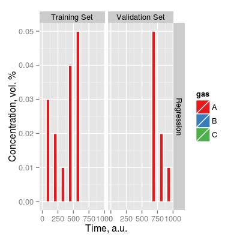
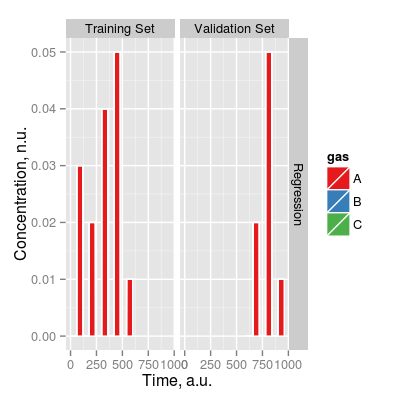

Class Scenario represents a concentration profile
to build a concentration matrix.
Slots of the class:
tunit |
Time
length of a single gas pulse. The unity value means
experiments with steady-state sensor signals. The default
value is 1. |
gases |
Gas indices. |
ngases |
The number of gases. |
gnames
|
Names of gases. |
concUnits |
Concentration units external to the model, values given in an input concentration matrix. |
concUnitsInt
|
Concentration units internal to the model. |
df |
Data frame of a concentration profile with
the columns: names of gases (gnames), time,
set, lab and tpoint. |
Methods of the class:
add<- |
A replacement method to add gas pulses to the object. |
getConc |
Get the concentration matrix of the object. |
The plot method has one type (parameter y):
time |
Shows the concentration of gases over time. |
# scenario object (empty): default initialization sc <- Scenario(tunit = 60) # add data to add(sc) <- list("A", 0.05, 2) add(sc) <- list("B", 0.05, 2) add(sc) <- list("C", 1, 2) add(sc) <- list(c("A", "B", "C"), c(0.02, 0.04, 0.5), 2) # scenario object: custom initialization set <- c("A 0.05", "B 0.05", "C 1", "A 0.02, B 0.04, C 0.5") sc <- Scenario(tunit = 60, T = set, nT = 2, V = set, nV = 2) # a real example of Scenario sc <- Scenario(name = "Regression", tunit = 60, concUnits = "perc", T = c("A 0.01", "A 0.02", "A 0.05"), nT = 30, V = c("A 0.01", "A 0.02", "A 0.05"), nV = 30, randomize = TRUE) scScenario `Regression` of 180 samples, tunit 60, randomize TRUE - gases A, B, C - Training Set: A 0.01 (30), A 0.02 (30), A 0.05 (30) - Validation Set: A 0.01 (30), A 0.02 (30), A 0.05 (30)add(sc) <- list("A", 0.03, 30, "T") add(sc) <- list("A", 0.04, 30, "T") scScenario `Regression` of 240 samples, tunit 60, randomize TRUE - gases A, B, C - Training Set: A 0.01 (30), A 0.02 (30), A 0.03 (30), A 0.04 (30), A 0.05 (30) - Validation Set: A 0.01 (30), A 0.02 (30), A 0.05 (30)# get information about the sensor show(sc)Scenario `Regression` of 240 samples, tunit 60, randomize TRUE - gases A, B, C - Training Set: A 0.01 (30), A 0.02 (30), A 0.03 (30), A 0.04 (30), A 0.05 (30) - Validation Set: A 0.01 (30), A 0.02 (30), A 0.05 (30)print(sc)Scenario `Regression` - 240 samples - 3 gases A, B, C - tunit: 60plot(sc)
plot(sc, facet = FALSE, concUnits = 'norm')
# extract conc. matrix from scenatio conc <- getConc(sc) print(head(conc))A B C 1 0 0 0 2 0 0 0 3 0 0 0 4 0 0 0 5 0 0 0 6 0 0 0